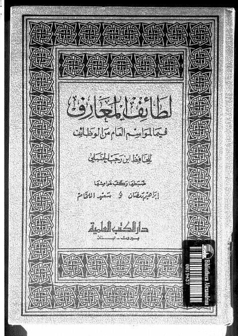

Downloads need an internet connection.
لطائف المعارف فيما لمواسم العام من الوظائف
Authors: ابن رجب الحنبلي
Editors: سعيد اللحام إبراهيم رمضان
Publishers: دار الكتب العلمية
**▫️ العنوان: لطائف المعارف فيما لمواسم العام من الوظائف** ▪️ المؤلف: #رجب_الحنبلي ▫️ المحقق: #إبراهيم_رمضان • #سعيد_اللحام ▪️ الناشر: #دار_الكتب_العلمية ▫️ تاريخ النشر: 1989-1409 ▪️ بلد النشر: بيروت، #لبنان ▫️ الطبعة: 1 ▪️ عدد الأجزاء: 1 ▫️ الصفحات: 408 ▪️ نوع الوعاء: #كتاب ▫️ التصنيف الرئيسي: #الزهد_والرقائق ۪